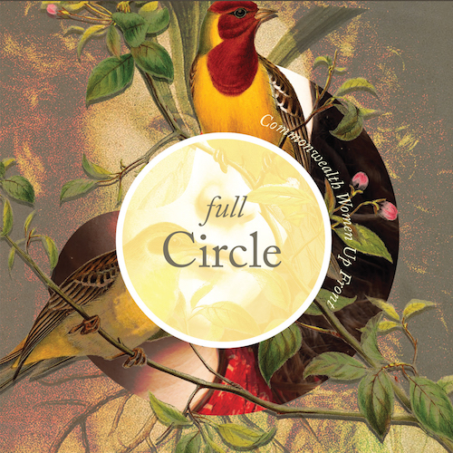

Full Circle Commonwealth Women Up Front
"Expertly curated and features compelling music from start to finish." — Floorshime Zipper BootsBuy on Bandcamp
Press & Reviews
"Expertly curated and features compelling music from start to finish. It’s a great way to sample the best of Boston’s female driven indie scene."
— Florshime Zipper Boots
"All these singers and bands excel in writing cool, gorgeous songs. They showcase vocal range and musical prowess. Impossible not to listen to it from start to finish again and again and again. Every song impresses with its songwriting, composition and ability to move, soothe or groove."
— Amy Steele for Entertainment Realm